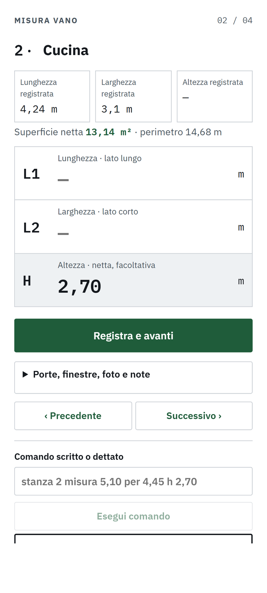
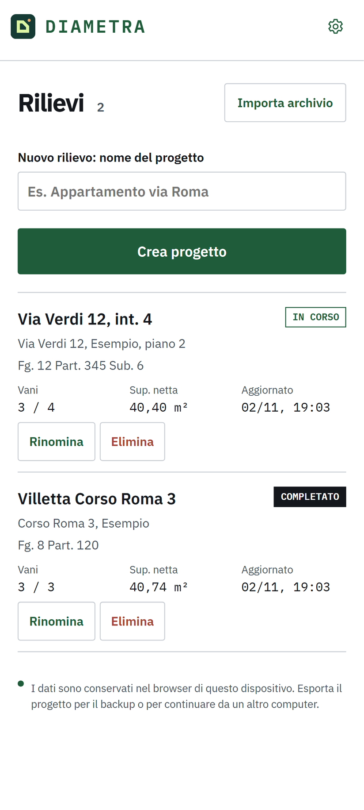
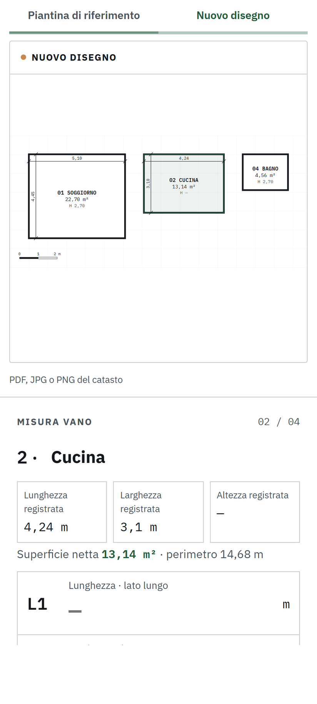
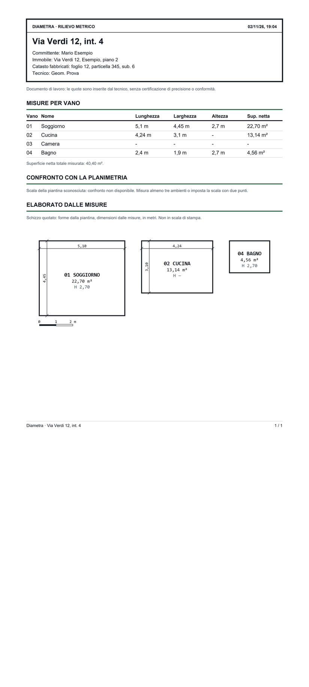

RILIEVO METRICO · PER GEOMETRI E TECNICI
Dalla planimetria catastale al disegno quotato, sul telefono.
Carichi la planimetria, Diametra trova i vani. Misuri con il laser, a voce o con la fotocamera: il disegno quotato, il report PDF e il file per il CAD si compongono mentre lavori.

Pensata per il sopralluogo
Una schermata per vano, numeri grandi e leggibili al sole, pulsanti per il pollice. Funziona senza connessione.
I vani si trovano da soli
Importi il PDF o la foto della planimetria catastale: l'app propone il contorno di ogni vano. Un doppio tocco aggiunge quello che manca.
Misure di ogni vano
Lunghezza, larghezza e altezza netta, con superficie e perimetro calcolati subito. Si passa al vano successivo con un tocco.
Detti le misure
Tieni premuto e di' «cucina 4,20 per 3,10 h 2,70». Il riconoscimento gira sul telefono e ascolta solo le parole delle misure.
Leica DISTO via Bluetooth
Associ il DISTO nelle impostazioni: ogni misura entra da sola nel campo giusto, registrata come misura laser.
Disegno quotato e report
Pianta con quote, superfici e altezze; report PDF con cartiglio e dati catastali; file DXF per AutoCAD, BricsCAD e LibreCAD.
Misurato contro planimetria
Per ogni vano vedi se le misure si discostano dalla planimetria oltre il 5% e 15 cm: sai dove guardare meglio.
Come funziona
Crea il rilievo
Nome, committente, indirizzo, foglio, particella e subalterno.
Importa la planimetria
PDF, JPG o PNG del catasto: scegli i vani proposti.
Misura i vani
Scrivi, detta o usa il laser. Il disegno si compone mentre misuri.
Esporta
Report PDF, DXF per il CAD, tabella CSV e backup del progetto.
Le schermate



I dati restano sul tuo telefono
Le planimetrie contengono dati personali dei proprietari. Diametra non li manda da nessuna parte.
- L'app Android non ha il permesso di accedere a internet.
- Nessun account, nessun cloud, nessuna pubblicità, nessun tracciamento.
- Il riconoscimento vocale gira sul telefono: l'audio non esce mai.
- Il backup è un file che conservi tu e riapri su un altro dispositivo.
- Questo sito non usa cookie né statistiche.
Installa su Android
Diametra non è sul Play Store: è in beta e si installa dal file.
Scarica l'APK (75 MB)- Apri il file scaricato dal telefono.
- Android avvisa che l'app arriva da una fonte sconosciuta: tocca Impostazioni e consenti l'installazione solo per l'app da cui l'hai aperto (browser o File).
- Tocca Installa. Se Play Protect segnala un'app non verificata, scegli Installa comunque.
- Le versioni successive si installano sopra questa e tengono i progetti.
Disinstallare l'app cancella i progetti. Prima di farlo usa Condividi / backup su ogni rilievo.
Prova nel browser
La stessa app gira nel browser, da computer o telefono, senza installare nulla. Il progetto resta nel browser che usi: esporta il backup per conservarlo.
Apri Diametra nel browserLimiti di questa beta
- È un taccuino di lavoro: le quote sono quelle inserite dal tecnico, senza certificazione di precisione o conformità.
- Nel browser la dettatura è più lenta che nell'app Android e scarica circa 100 MB la prima volta.
- La misura con la fotocamera è un prototipo: sbaglia di qualche centimetro e va bene solo per un controllo.
- Il collegamento al Leica DISTO non è ancora stato provato con uno strumento reale.